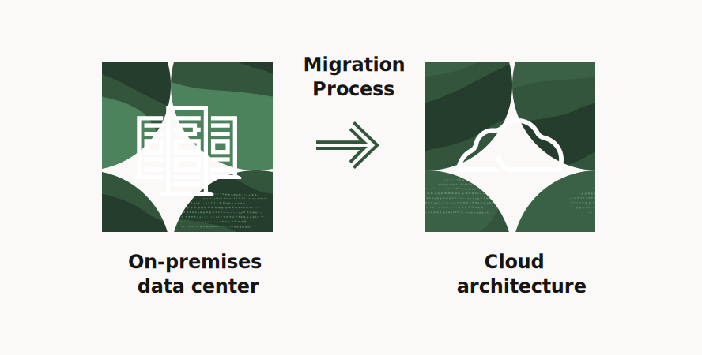

About Us
We are DevOps Defender, a team of skilled professionals dedicated to implementing and optimizing DevOps practices. Our mission is to streamline development processes, enhance collaboration, and deliver high-quality software efficiently.
Services
Continuous Integration
Automating the build and testing process to ensure code quality and accelerate development.
Continuous Delivery
Streamlining the deployment process to deliver features and updates quickly and reliably.
Infrastructure as Code
Managing and provisioning infrastructure using code to ensure consistency and scalability.
Projects
DevOps Project
Team Members: Awis, Asyraf, Faiz Ahmad, Farid

Cloud Migration
Migrating legacy applications to modern cloud infrastructure.
